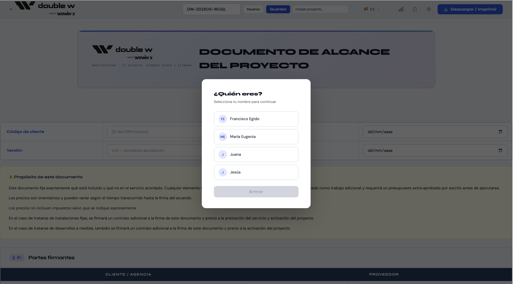
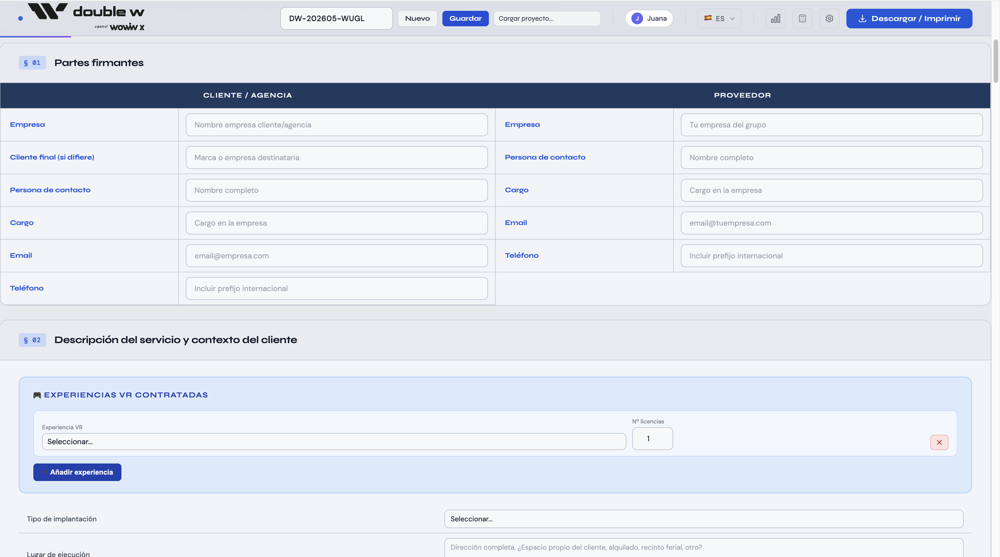
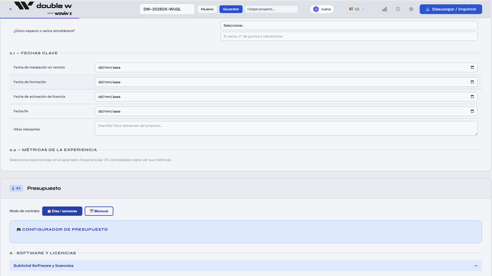
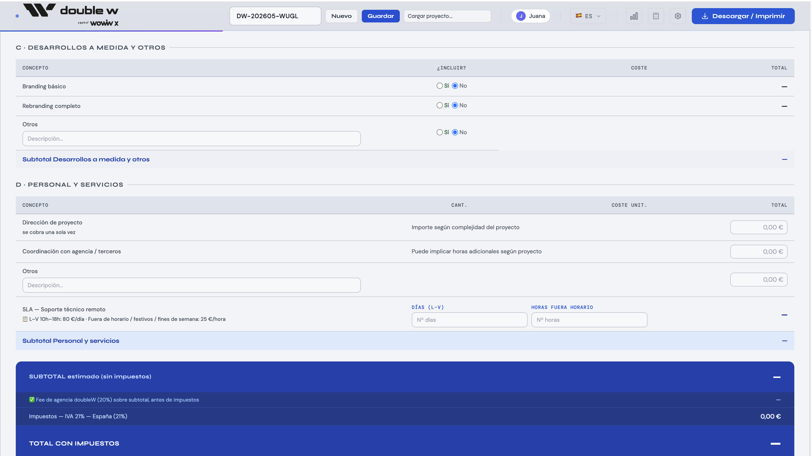
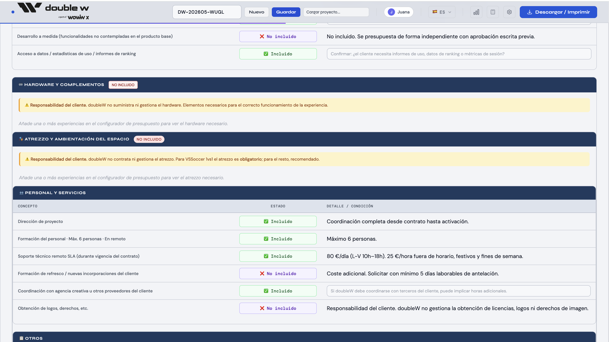
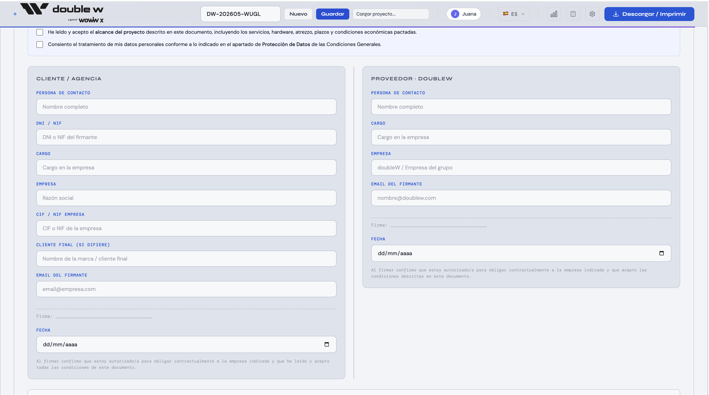

Cerrar el alcance en treinta minutos,
no en tres reuniones.
En servicios creativos, el alcance es donde más se pierde. Construimos un flujo guiado que el cliente rellena solo, integra presupuesto y exporta el documento listo para contratar.
El alcance es donde más se pierde.
En servicios creativos, la conversación de alcance es el cuello de botella. El cliente no sabe articular qué necesita; el estudio improvisa el presupuesto sobre intuiciones. El proyecto arranca con expectativas mal alineadas, y los reajustes posteriores cuestan margen y energía a las dos partes.
doubleW quería convertir esa conversación en un proceso estructurado que cualquier prospecto pudiera completar solo, sin perder el rigor ni el tono de marca. El objetivo era llegar a la primera reunión con el alcance ya cerrado.
Siete secciones, un documento vivo.
Diseñamos el documento como un flujo estructurado de siete secciones que cubre todo lo que un proyecto necesita — partes firmantes, descripción del servicio, presupuesto, scope claro, requisitos técnicos, condiciones generales y firma. Cada sección es rellenable por el cliente y se calcula en tiempo real.
- A Documento estructurado. Siete secciones numeradas que el cliente recorre al ritmo que quiera — sin perder de vista el conjunto.
- B Configurador de presupuesto en vivo. Software, desarrollos a medida y personal con cálculo automático de subtotales, fee de agencia e impuestos.
- C Scope claro: incluido vs no incluido. Tabla explícita por bloque (hardware, ambientación, personal y servicios) — cero ambigüedad antes de firmar.
- D Firma desde el navegador + PDF. Cliente y proveedor firman dentro del propio documento; al cerrar, exporta PDF con marca doubleW aplicada.






De varias reuniones a una sola sesión.
El cliente llega a la primera reunión con el alcance ya estructurado y un rango de presupuesto ya visto. La conversación deja de ser de descubrimiento y pasa a ser de ajuste. El estudio entra a producir antes — el cliente entra a recibir antes.
vs 3+ reuniones
al instante
para el cliente
Frontend ligero, sin backend propio.
El producto está pensado para vivir en un dominio del cliente final — no requiere infraestructura. La lógica condicional y el cálculo de presupuesto corren en el navegador. El PDF se genera del lado del cliente, con la marca aplicada.
Adaptamos el flujo a tu marca.
Define y Firma es la versión doubleW del concepto. Si te interesa una versión adaptada a tu estudio o servicio, conversemos.